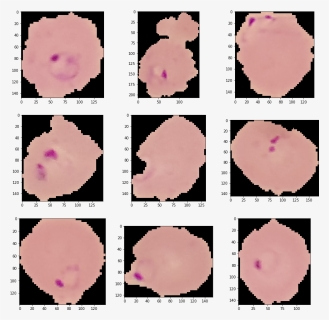
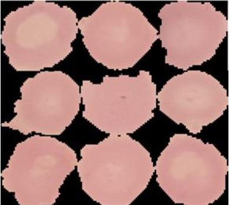
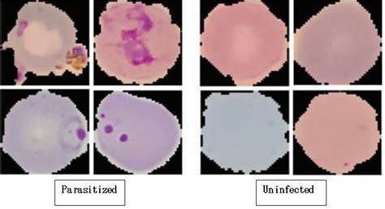

Di bawah ini adalah penjelasan mengenai malaria yang disebabkan oleh parasit dan kondisi yang tidak terinfeksi (uninfected):
Malaria Plasmodium Falciparum (Parasit)

Plasmodium falciparum adalah parasit malaria yang paling mematikan, terutama umum di wilayah Afrika. Parasit ini menginfeksi sel darah merah, menyebabkan gejala seperti demam tinggi, nyeri kepala, dan mual. Infeksi parasit ini bisa berakibat fatal jika tidak segera ditangani.
Uninfected (Tidak Terinfeksi)

Kondisi tidak terinfeksi (uninfected) menunjukkan sel darah merah yang normal dan sehat tanpa keberadaan parasit malaria. Ini adalah kondisi ideal yang harus dipertahankan melalui tindakan pencegahan, seperti penggunaan kelambu, obat antimalaria, dan vaksinasi.
Perbandingan Parasit dan Uninfected

Perbandingan antara sel darah yang terinfeksi oleh parasit malaria dengan sel darah yang tidak terinfeksi menunjukkan perbedaan yang signifikan dalam ukuran dan bentuk sel darah. Pemahaman ini penting untuk deteksi dini dan pengobatan malaria yang efektif.
Malaria adalah penyakit menular yang disebabkan oleh parasit yang ditularkan melalui gigitan nyamuk Anopheles yang terinfeksi. Deteksi dini dan pemahaman tentang perbedaan antara sel darah yang terinfeksi dan tidak terinfeksi sangat penting untuk mengurangi penyebaran penyakit ini.